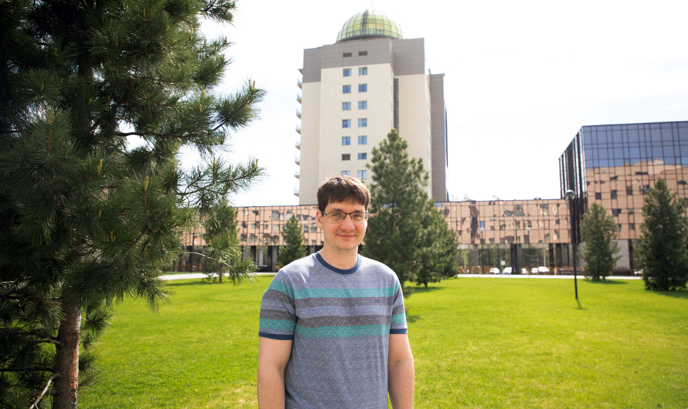

Иван Афанасьев преподаёт в новосибирском отделении Computer Science Center с самого открытия. Сначала он вёл семинары базового курса по С++, затем лекции, а после и продвинутую часть курса. Преподавание Иван совмещает с основной работой C++-инженером. Кандидат физико-математических наук по математическому моделированию и численным методам.
— Как ты попал в Computer Science Center?
— Лет пять назад я работал в компании, где мне категорически не хватало общения на профессиональные темы. Тогда узнал, что в Новосибирске есть филиал Школы анализа данных Яндекса. Прошёл слух, что это весьма неплохая школа, и я туда поступил.
В ШАДе прошёл базовый курс по плюсам и понял, что, во-первых, в курсе можно многое улучшишь, и во-вторых, преподаватель знает об этом, морально согласен, но у него нет времени и сил. Сейчас уже не помню, как, но мы договорились, что я возьму семинары. В таком формате мы проработали пару лет, а потом и лекции достались мне.
Одновременно в 2017 году в Новосибирске открылся Computer Science Center. ШАД вошёл в него в качестве направления по анализу данных. Получается, что я преподаю в новосибирском CS центре с момента его основания.
Позже случилась ещё одна интересная история. Помимо моего базового курса в центре был и продвинутый курс по плюсам. В какой-то момент преподаватель этого курса уволился, и год занятий не было. Когда я об этом узнал, мне стало обидно: ну как в CS центре с таким качественным образованием нет продвинутого курса по плюсам? Так просто не должно быть. Тогда я договорился с кураторами и взялся вести часть для продвинутых ребят. Таким образом, я второй год веду полный курс по плюсам: и базовый, и продвинутый.
— И как впечатления от преподавания?
— Интересные. Даже несмотря на то, что я который год читаю один и тот же курс, случается, что студенты задают хитрые вопросы на подумать. Приходится говорить: сейчас я вам не отвечу, поищу информацию дома, оформлю в более точные и конкретные знания и расскажу на следующей лекции. Поэтому умение студентов войти в рабочий процесс помогает сохранить интерес к курсу.
— Твоя основная сфера деятельности — это промышленная разработка. Сложно ли совмещать работу в Align Technology и CS центре? Сколько времени ты тратишь на преподавание?
— Моя работа в CS центре — это для души. К преподаванию я отношусь как к некоторой социально значимой работе, инвестиции в сообщество плюсовиков в нашем городе.
По-настоящему было сложно в самый первый год, когда я только начинал вести семинары. Хотелось глубоко поработать с каждым студентом, провести полноценное ревью домашних заданий. Проблема была в том, что я решил это делать в одиночку. 25 студентов, у каждого по четыре больших домашки. Проверка съедала какое-то ненормальное количество времени, можно было легко выгореть. Я поговорил с кураторами, и они (за что огромное спасибо!) нашли двух проверяющих в помощь. После делегирования доброй порции работы стало прилично легче.
Второй раз было сложно, когда начались лекции. Было четкое понимание, что это мой личный курс. Я хотел его модифицировать, переструктурировать, делать что-то интересное, а не начитывать лекции с листочка. Я начал собирать некое методическое пособие: каждую лекцию оформлял в виде питоновского ноутбука, выкладывал на гитхаб, и они всегда были доступны студентам. В первый заход все эти питоновские ноутбуки нужно было приготовить. Сесть, проработать тему лекции, полностью её структурировать, понять все зависимости, записать, посмотреть, что идёт, а что нет, оценить, укладываешься ли во время занятия — всё это отъедало очень много времени.
Когда читаешь курс во второй, третий раз, всё уже готово. Остаётся пройтись по своим же замечаниям: вот тут переделать, тут пример поменять, здесь студенты ничего не поняли, поэтому надо либо выкинуть кусок, либо рассказать его по-другому и т.д. Но в целом затраты на подготовку уменьшились на порядок. Поэтому сейчас с учётом двух факторов — есть проверяющие и готовая методичка — я трачу приемлемое для себя время на преподавание.
— Ты сказал, что для тебя преподавание — это социально значимая работа для повышения уровня сообщества. А как ты вообще оцениваешь этот уровень в Новосибирске?
— На мой взгляд, профессионализм сообщества в городе высокий, но скрытый. В чем это выражается? У меня есть пара знакомых реально крутых плюсовиков — иногда они без шуток цитируют стандарт. Но никто из них никак не светится. Доклады на конференциях, профессиональный блог, преподавание — нет, ничего. И мне, с одной стороны, обидно, что их талант никак не проецируется на сообщество, замыкается в одном человеке. С другой стороны, не все любят общаться, делиться, презентовать.
Зная эти скрытые нюансы, могу сказать, что уровень сообщества в Новосибирске приличный. Конечно, не сравнить с Москвой или Питером, но есть с кем обсудить сложные задачи.
— А нравится ли тебе уровень студентов, которые сейчас приходят в центр?
— Да, студенты хорошие, мне с ними комфортно работать.
Опять же, в столицах есть больше образовательных возможностей, больше мотивации, наверное. Например, сейчас я сам
слушаю курс у Евгения Калишенко по параллельному программированию. Я в восторге от этого курса, он просто
офигенный. Но есть нюанс: когда Евгений приходит на первую лекцию и спрашивает у аудитории, кто раньше работал с
многопоточностью, поднимается лес рук. Когда я задаю этот же вопрос своей группе на продвинутом курсе по плюсам,
поднимается одна рука, может, две. И это нормально.
— Не хочешь прочесть какой-нибудь курс в университете?
— Мне нравится преподавать в CS центре. Возможно, я хотел бы взять что-то ещё, но не потяну физически. Поэтому вопрос о работе в вузе себе даже не ставил.
Ещё в университетском преподавании есть один довольно важный момент. Как-то общался со знакомым из вуза и рассказывал ему, как классно преподавать в CS центре. Что у меня толковые студенты, что могу добавлять в программу новинки языка сразу после их выхода, что свободно выкидываю какие-то темы, если мне кажется, что они не актуальны. А он мне отвечает: «Знаешь, тебе очень повезло, что центр позволяет настолько гибко работать с программой. В университете иначе: нужно пройти кучу бюрократических проволочек, чтобы сформулировать и утвердить учебный план. Менять программу — это огромная проблема». Если честно, я не знаю, хочу ли в принципе сталкиваться с таким подходом.
В Computer Science Center меня никто не контролирует. Не знаю, хорошо это или плохо, но я один ответственен за то, что студенты будут учить и как они будут знать C++.
— Что, на твой взгляд, самое главное в образовательном курсе? Чёткая структура, проработанная и понятная теория, большое количество практических заданий, что-то ещё?
— У меня есть некоторая специфика. Теория — это классно, но я её даю по минимуму и только то, что нужно для конкретной задачи. Иногда и этого минимума не даю, а говорю, где можно найти подробности, и объясняю самое главное на пальцах. Возможно, в этот момент многие преподаватели скажут: «О боже мой, какой кошмар!» Но я приходил на курс как семинарист, и идея изначально была такой: есть тема, кратко её рассказываю, потом на эту тему даю задачу, студенты её решают, а я помогаю в ревью. И вот эта часть сохранилась и перекочевала и в лекционный материал. То есть курс исторически ориентирован на практику, основное это или нет — не знаю.
— Многие ли студенты бросают курс во время обучения?
— Конечно, каждый год бывают ребята, которые берут курс, а потом отваливаются. Стабильно это процентов 30 через пару недель обучения, те студенты, которые понимают, что курс для них сложноват. Но мне больше нравятся другие примеры: когда приходят люди, и у них горят глаза от языка C++.
У меня два года подряд были такие студенты, которые специально оставались после занятий. «Так, всё, у вас лекция закончилась? Значит, теперь моё время». И мы остаемся с ними после лекции, уже полдесятого вечера, но мы сидим ещё полчаса в университете и разбираем список вопросов, которые они успели за неделю приготовить. Это очень клёвые ребята, с ними нереально классно работать. Конечно, в десять вечера ты уже хочешь домой. Но когда видишь, как у человека горят глаза, как ему нравится тема, заряжаешься от них и думаешь, как здорово, что у тебя есть такие студенты.
— Чему ты учишься у своих студентов?
— Как бы странно это ни звучало, но я учусь у них задать вопросы.
Иногда бывает, что ты рассказываешь-рассказываешь какую-то тему, потом студент проницательно смотрит на неё, собирает всё вместе в своей голове и спрашивает: «А вот как работает это функция? Здесь вы сказали так, здесь так, а здесь вот так — и оно не сходится. Я не понимаю, как она тогда работает, какие у неё механизмы?» Ты смотришь на эту функцию и тоже не понимаешь, как она может при этом работать. Говоришь: «Я разберусь». Уходишь домой, проверяешь, понимаешь, что во время рассказа накосячил, и думал всё не то, и жил неправильно. Возвращаешься через неделю с фразой: «Товарищи, извините, мир поменялся, всё иначе. Сейчас разберём ошибки, которые я допустил на прошлой лекции». Такие вопросы — очень клёвый момент: они требуют способности посмотреть вокруг, уложить всё в своей голове и найти нестыковку. Причем спрашивают не плюсовики, не ребята, которые годами пишут на языке. Обычно это джависты — те, кому просто интересно разобраться.
— В последний год мы все плотно познакомились с дистанционным обучением. Иван, как твои впечатления и ощущения? Хочешь ли продолжить преподавать дистанционно?
— Ох, отношение к дистанционке двоякое. С одной стороны, удалёнка намного удобнее в плане личного комфорта. Я, например, сейчас работаю из дома. Незадолго до лекции прощаюсь со всеми коллегами, переключаю вкладки в браузере — и всё, продолжаю работать уже со студентами. В 15-минутную переменку могу сходить попить чай, немного поиграть с ребёнком. В полдесятого занятие заканчивается, я просто закрываю компьютер и иду по семейным делам.
С другой стороны, занятия по зуму — это когда ты разговариваешь со стеной. Хочешь понять, как реагирует аудитория, а на тебя смотрят десять черных квадратов. При личной встрече всё иначе: ты сразу видишь, что студенты эту тему уже знают и им скучно, или слишком сложно и все уже сползли под стол. Тогда нужно срочно тормозить, тормошить их, задавать вопросы, переходить к примерам. Вот этот фидбэк от аудитории, как мне кажется, на качество лекции влияет категорически. Просто возможность взглянуть на лица и понять агрегатное состояние студентов. Для меня это главные плюсы и минусы.
Что дальше — не знаю. И личного комфорта хочется, и качественно учить. Что из этого победит? Понятия не имею.
— Изменил ли ты структуру курса в связи с дистанционкой?
— Раньше перед каждым занятием я проводил пятиминутки: выдавал студентам листочки и они решали какую-нибудь мелочь по теме предыдущей лекции. Так пытался мотивировать их повторять пройденный материал. С переходом на удалёнку пятиминутки ушли. Можно их как-то организовать в Zoom, но, кажется, это не то.
— Что ты пожелаешь Computer Science Center в день рождения?
— Ярких выпускников и ярких преподавателей. Ведь что может быть лучшей рекламой, чем хорошие выпускники? И что ещё поможет подготовить хороших выпускников, кроме самых классных преподаватели?
